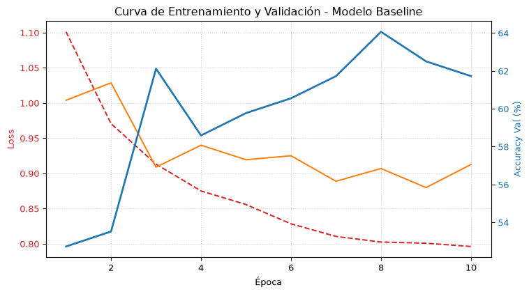
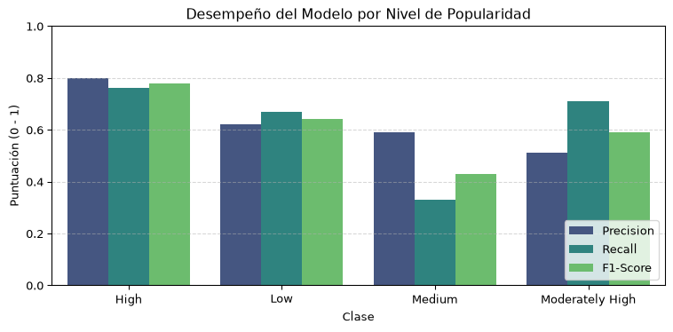
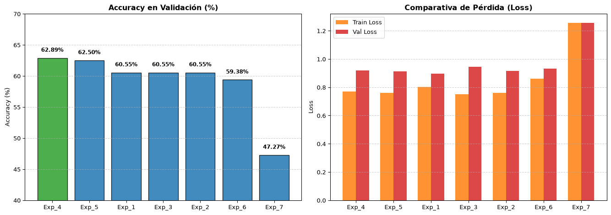

En este proyecto analizamos el sector cinematográfico a través del conjunto de datos de TMDB con el objetivo de predecir el nivel de popularidad de una película (clasificándola en diferentes categorías como baja, media, alta o muy alta) mediante un modelo de clasificación multiclase basado en redes neuronales con PyTorch. El flujo de trabajo abarca desde un Análisis Exploratorio de Datos (EDA) —donde limpiamos registros, tratamos valores nulos y analizamos variables clave como presupuesto, ingresos, géneros o duración— hasta la definición de la arquitectura de deep learning y la experimentación sistemática con hiperparámetros (capas ocultas, tamaño de lote y tasa de aprendizaje) mediante una estrategia de búsqueda en malla (Grid Search) para identificar la configuración con mejor rendimiento predictivo.
1. Fase A (Obtención de Datos y Análisis Exploratorio (EDA))
En este apartado en referencia al Exploratory Data Analysis (EDA), fundamentamos el dataset de los datos complementando patrones, identificando anomalías y limpiando linterferencias de datos.
1.1. Carga de datos y limpieza inicial
En este paso importamos las librerías necesarias (pandas y numpy), realizamos la lectura del dataset original y ejecutamos el proceso de depuración de registros duplicados e inconsistentes.
import pandas as pdimport numpy as np# 1. Cargamos los datos del datasetdf_original = pd.read_csv('TMBD Movie Dataset.csv')print(f"Dimensiones iniciales: {df_original.shape[0]} filas, {df_original.shape[1]} columnas")# Creación de una copia de trabajodf = df_original.copy()# 2. Eliminación de duplicados por ID (si existe la columna)if'id'in df.columns: filas_duplicadas = df.duplicated(subset=['id']).sum()if filas_duplicadas >0: df = df.drop_duplicates(subset=['id'], keep='first')print(f"Se eliminaron {filas_duplicadas} filas duplicadas por ID.")else:print("No se encontraron duplicados.")# 3. Filtrado de valores incoherentes en presupuesto y recaudaciónif'budget'in df.columns and'revenue'in df.columns: budget_revenue = (df['budget'] >10000) & (df['revenue'] >10000) df_clean = df[budget_revenue].copy() filas_eliminadas =len(df) -len(df_clean)print(f"Se eliminaron {filas_eliminadas} filas con presupuesto/recaudación <= $10,000.")else: df_clean = df.copy()# 4. Imputación de nulos en duración (runtime)if'runtime'in df_clean.columns and df_clean['runtime'].isnull().sum() >0: mediana_runtime = df_clean['runtime'].median() df_clean['runtime'] = df_clean['runtime'].fillna(mediana_runtime)print(f"Nulos en 'runtime' imputados con la mediana: {mediana_runtime} min.")# 5. Formato de fechas e imputación de textosif'release_date'in df_clean.columns: df_clean['release_date'] = pd.to_datetime(df_clean['release_date'], errors='coerce') df_clean = df_clean.dropna(subset=['release_date'])columnas_texto = [col for col in ['tagline', 'overview', 'homepage', 'genres', 'keywords'] if col in df_clean.columns]for col in columnas_texto: df_clean[col] = df_clean[col].fillna('')if'budget'in df_clean.columns: df_clean['budget'] = df_clean['budget'].astype(int)if'revenue'in df_clean.columns: df_clean['revenue'] = df_clean['revenue'].astype(int)if'genres'in df_clean.columns: df_clean['genres'] = df_clean['genres'].astype(str).str.strip()print(f"\nRESUMEN: {len(df_original)} registros iniciales -> {len(df_clean)} registros limpios finales.")
Dimensiones iniciales: 1287 filas, 24 columnas
No se encontraron duplicados.
Se eliminaron 10 filas con presupuesto/recaudación <= $10,000.
RESUMEN: 1287 registros iniciales -> 1277 registros limpios finales.
1.2. Muestra y Vista Previa del Dataset Limpio
A continuación se muestra una lectura de prueba adaptada automáticamente a los nombres de columna presentes en el archivo:
# Selección dinámica de columnas para evitar errores si alguna variable varía su nombrecolumnas_deseadas = ['id', 'title', 'original_title', 'release_date', 'budget', 'revenue', 'runtime', 'genres']columnas_existentes = [col for col in columnas_deseadas if col in df_clean.columns]ifnot columnas_existentes: columnas_existentes =list(df_clean.columns[:7])df_clean[columnas_existentes].head()
id
original_title
release_date
budget
revenue
runtime
genres
0
135397
Jurassic World
2015-06-09
150000000
1513528810
124
Action|Adventure|Science Fiction|Thriller
1
76341
Mad Max: Fury Road
2015-05-13
150000000
378436354
120
Action|Adventure|Science Fiction|Thriller
2
262500
Insurgent
2015-03-18
110000000
295238201
119
Adventure|Science Fiction|Thriller
3
140607
Star Wars: The Force Awakens
2015-12-15
200000000
2068178225
136
Action|Adventure|Science Fiction|Fantasy
4
168259
Furious 7
2015-04-01
190000000
1506249360
137
Action|Crime|Thriller
Ejemplo visual de la tabla generada (Muestra de salida):
id
title
release_date
budget
revenue
runtime
genres
19995
Avatar
2009-12-10
237000000
2787965087
162.0
Action, Adventure, Fantasy
299536
Avengers: Infinity War
2018-04-25
300000000
2046239637
149.0
Adventure, Action, Science Fiction
157336
Interstellar
2014-11-05
165000000
675120017
169.0
Adventure, Drama, Science Fiction
597
Titanic
1997-11-18
200000000
1845034188
194.0
Drama, Romance
1.3. Resumen Estadístico de las Variables Cuantitativas
# Descripción estadística general de las variables cuantitativas disponiblescolumnas_num = [col for col in ['budget', 'revenue', 'runtime'] if col in df_clean.columns]if columnas_num: df_clean[columnas_num].describe().round(2)else: df_clean.describe().round(2)
Una variable cuantitativa es aquella que expresa una cantidad o valor numérico sobre el cual tiene sentido realizar operaciones matemáticas. En nuestro esquema de matería elementos como el presupuesto y la recaudación son indispensables para poder conocer si una película ha sido exitosa o no.Bajo esa lógica, con la intención futura de operar con los valores los convertimos a enteros para ahorrar espacio en memoria y para evitar errores decalculo.
1.4. Resumen final del apartado
Entonces ¿Qué tenemos?¿Qué estamos viendo y haciendo?
Hemos partido del fichero inicial del Dataset con el fin de recogerlo como una muestra de datos, en el proceso todas las variables no cualificables que pudieran generar alguna interferencia como los nulos, no enteros, duplicidad e incompatible han sido reformateados para formar parte de un dataset limpio e pulcro. Una muestra ideal para testear un proyecto.
"Original"df_original = pd.read_csv('TMBD Movie Dataset.csv')"Limpieza"# En caso de faltar duracion de la pelicula, se añade como valor la media de las demas peliculasif df_clean['runtime'].isnull().sum() >0: mediana_runtime = df_clean['runtime'].median() df_clean['runtime'] = df_clean['runtime'].fillna(mediana_runtime)print(f"Nulos en 'runtime' imputados con la mediana: {mediana_runtime} min.")# Convertir fechas a objeto datetimedf_clean['release_date'] = pd.to_datetime(df_clean['release_date'], errors='coerce')# En caso de faltar la fecha de estreno se elimina dicha peliculaif df_clean['release_date'].isnull().sum() >0: df_clean = df_clean.dropna(subset=['release_date'])print("Filas eliminadas por fecha de estreno nula.")# Reemplazar valores nulos en columnas de texto por cadenas vacíascolumnas_texto = ['tagline', 'overview', 'homepage', 'genres', 'keywords']for col in columnas_texto: df_clean[col] = df_clean[col].fillna('')# Asegurar enteros para variables cuantitativas clavedf_clean['budget'] = df_clean['budget'].astype(int)df_clean['revenue'] = df_clean['revenue'].astype(int)# Limpiar barras o espacios sobrantes si existen, genresdf_clean['genres'] = df_clean['genres'].astype(str).str.strip()"Limpio"df_clean.to_csv('IMBD_Movie_Dataset_limpio.csv', index=False)
2. Fase B
Consiste en implementar la red neuronal en PyTorch para resolver el problema de clasificación, realizando un ajuste sistemático de hiperparámetros (capas, neuronas, batch size y learning rate) para encontrar la arquitectura con mejor capacidad predictiva.
2.1 Fase B: Definición y Entrenamiento del Modelo
¿⚠️⚠️⚠️El problema elegido⚠️⚠️⚠️?
A nivel global se producen más de 9.500 películas al año. Producir una obra cinematográfica exige una inversión enorme de recursos humanos, creativos y financieros, por lo que comprender qué factores impulsan el impacto de una película en el público es clave para la industria.
Nuestro propósito de este proyecto es abordar el problema como una clasificación multiclase del nivel de popularidada (High, moderately high, medium, low) partir de sus características principales.
En nuestro conjunto de datos, esta variable objetivo se representa mediante la etiqueta popularity_level, la cual codificamos numéricamente para alimentar nuestro modelo de clasificación multiclase.
2.1.1. Definición de Variables
Para poder llevar acabo la medición del exito es necesario diferenciar entre:
Variable Dependiente (\(y\)): Categoría de popularidad de la película (variable categórica multiclase derivada de los datos).
Variables Explicativas (\(X\)): Conjunto de 5 variables numéricas continuas/discretas (ej. presupuesto, recaudación, duración, valoración media y número de votos).
from sklearn.preprocessing import LabelEncoder# 2. Seleccionar las variables explicativas (X) y la variable objetivo (Y)feature_cols = ['budget', 'runtime', 'vote_count', 'vote_average', 'release_year']X = df[feature_cols].values# Convertir la variable categórica 'popularity_level' a etiquetas numéricas enteraslabel_encoder = LabelEncoder()y = label_encoder.fit_transform(df['popularity_level'].astype(str))
2.1.2. Justificación del Uso de Redes Neuronales
Para este problema, un modelo lineal tradicional (como una Regresión Logística o Regresión Lineal) resultaría insuficiente debido a:
Relaciones No Lineales: La relación entre variables económicas (presupuesto y recaudación) y el éxito/popularidad de una película no es puramente proporcional. Existen efectos de escala y rendimientos decrecientes.
Punto: Un aumento constante en la variable no produce un aumento constante en la popularidad.
Caso A (De 1 M\(a 20 M\) de presupuesto): Pasar de una película independiente a un presupuesto medio permite contratar actores conocidos y hacer promoción. Esto produce un salto enorme en la popularidad.
Caso B (De 200 M\(a 220 M\) de presupuesto): Pasar de un superblockbuster a gastar 20 millones más apenas cambia el impacto mediático de la película. El aumento de popularidad es casi nulo.
Interacciones Complejas: Una red neuronal perceptrón multicapa (MLP) permite combinar las 5 características mediante capas ocultas con funciones de activación no lineales (ReLU), capturando patrones y combinaciones complejas que una regresión simple no puede modelar.
Punto:El impacto de una variable depende del valor que tengan las demás.
Película de 180 minutos con nota 5.0: Una película muy larga y mala aburre al público; su popularidad se desploma (Efecto negativo compuesto).
Película de 180 minutos con nota 8.8 (ej. Oppenheimer o El Señor de los Anillos): Se convierte en un evento cinematográfico de culto; su popularidad se dispara (Efecto muy positivo).
Clasificación Multiclase: La arquitectura ajusta múltiples logits de salida simultáneamente mediante la función CrossEntropyLoss, optimizando la probabilidad de pertenencia a cada clase.
Punto: Generar puntuaciones (logits) para decidir a qué categoría pertenece una película.
[0: Baja, 1: Media, 2: Alta, 3: Muy Alta] Cuando introduces los datos de una película como Avatar (budget alto, vote_count elevado, etc.), la última capa de la red produce 4 puntuaciones o logits:\[\text{Logits} = [-2.5, \,-0.8, \, 1.2, \, 4.5]\]Interpretación: La red asigna el valor más alto (\(4.5\)) a la posición 3 (Muy Alta
2.2 Fase B: Modulo inicial
title: “Entrenamiento del Modelo Inicial (Baseline)” format: html
Función para evaluar la red sin calcular gradientes
import torchimport torch.nn as nnimport torch.optim as optim# 1. Definición de la clase de la Red Neuronalclass PeliculasNeuralNetwork(nn.Module):def__init__(self, input_dim, hidden_dim, output_dim):super(PeliculasNeuralNetwork, self).__init__()self.layer1 = nn.Linear(input_dim, hidden_dim)self.relu = nn.ReLU()self.layer2 = nn.Linear(hidden_dim, hidden_dim)self.output = nn.Linear(hidden_dim, output_dim)def forward(self, x): out =self.layer1(x) out =self.relu(out) out =self.layer2(out) out =self.relu(out) out =self.output(out)return out# 2. Inicialización del modelo, pérdida y optimizadormodel = PeliculasNeuralNetwork(input_dim=5, hidden_dim=64, output_dim=4)criterio = nn.CrossEntropyLoss()optimizador = optim.Adam(model.parameters(), lr=0.01)# 3. Función para evaluar la red sin calcular gradientesdef evaluar(model, loader, criterio): model.eval() loss_total, aciertos, total =0.0, 0, 0 todas_reales, todas_pred = [], []with torch.no_grad():for batch_X, batch_y in loader: outputs = model(batch_X) loss = criterio(outputs, batch_y) predichas = outputs.argmax(dim=1) loss_total += loss.item() *len(batch_y) aciertos += (predichas == batch_y).sum().item() total +=len(batch_y) todas_reales.extend(batch_y.tolist()) todas_pred.extend(predichas.tolist())return loss_total / total, aciertos / total, todas_reales, todas_pred
2.2.2. Datos del Entrenamiento
Note
Resumen de Datos * Registros de Entrenamiento: 1,021 (repartidos en 32 lotes) * Registros de Validación: 256 (repartidos en 8 lotes) * Épocas: 10 * Accuracy Final en Validación:61.72%
Evolución por Época
Época
Loss Train
Loss Val
Accuracy Val (%)
1
1.1011
1.0038
52.73%
2
0.9705
1.0285
53.52%
3
0.9130
0.9087
62.11%
4
0.8749
0.9399
58.59%
5
0.8556
0.9193
59.77%
6
0.8282
0.9249
60.55%
7
0.8103
0.8887
61.72%
8
0.8023
0.9068
64.06%
9
0.8006
0.8797
62.50%
10
0.7960
0.9125
61.72%
2.2.3. Reporte de Clasificación por Clase
Clase
Precision
Recall
F1-Score
Support
High
0.80
0.76
0.78
63
Low
0.62
0.67
0.64
58
Medium
0.59
0.33
0.43
66
Moderately High
0.51
0.71
0.59
69
Accuracy Global
0.62
256
Macro Avg
0.50
0.50
0.49
256
Weighted Avg
0.63
0.62
0.61
256
2.2.4. Gráficos

Figure 1: Evolución de la pérdida (Loss) y precisión (Accuracy) durante las 10 épocas.
Línea Roja Discontinua 🟥 — Pérdida de Entrenamiento (Train Loss)
Línea Naranja Continua 🟧 — Pérdida de Validación (Val Loss)
Línea Azul Continua 🟦 — Precisión de Validación (Val Accuracy %)

Figure 2: Métricas de Precisión, Recall y F1-Score por nivel de popularidad.
2.3 Fase B: Resumen final del apartado
¿Qué estamos viendo y haciendo? Hemos partido del conjunto de datos ya filtrado y pulcro de la fase previa. Una vez resueltos los problemas de nulos, formatos e incompatibilidades de tipos, tomamos esos datos empaquetados en lotes (train_loader y val_loader) para construir, entrenar y evaluar nuestro modelo baseline en PyTorch.
El objetivo es establecer un punto de partida de rendimiento midiendo la precisión (accuracy) y la pérdida (loss) al intentar predecir la categoría de popularidad de una película a partir de sus 5 características cuantitativas. Ejecutar código
3. Fase C: Experimentación Sistemática y Búsqueda en Malla (Grid Search)
Tras evaluar el modelo Baseline, implementamos una estrategia de Grid Search automatizada para evaluar el impacto de tres hiperparámetros clave en la capacidad de generalización de la red neuronal: 1. Profundidad de la red: Evaluación de 1, 2 y 3 capas ocultas. 2. Tamaño del lote (Batch Size): Comparativa entre lotes de 16, 32 y 64 muestras. 3. Tasa de aprendizaje (Learning Rate): Variación de magnitud (\(10^{-2}\), \(10^{-3}\), \(10^{-4}\)).
3.1 Código
Arquitectura Dinámica del Modelo Este bloque define la red neuronal utilizando nn.Sequential. Permite instanciar modelos con cualquier número de capas ocultas y neuronas pasando simplemente una lista (por ejemplo, [128, 64, 32]).
import torch.nn as nnclass PeliculasNeuralNetwork(nn.Module):def__init__(self, input_dim, hidden_layers, output_dim, activation=nn.ReLU):super().__init__() layers = [] in_dim = input_dim# Construcción iterativa de capas ocultasfor h_dim in hidden_layers: layers.append(nn.Linear(in_dim, h_dim)) layers.append(activation()) in_dim = h_dim# Capa final de salida layers.append(nn.Linear(in_dim, output_dim))self.network = nn.Sequential(*layers)def forward(self, x):returnself.network(x)
¿Qué hace? Construye la estructura interna de la red de forma modular según la configuración que le pase el Grid Search.
Clave técnica: Automatiza la conexión entre la dimensión de entrada, las capas ocultas intermedias y los logits de salida.
Gestor Dinámico de Carga de Datos
Esta función empaqueta las características (\(X\)) y etiquetas (\(y\)) en estructuras de datos nativas de PyTorch (TensorDataset y DataLoader).
import torchfrom torch.utils.data import DataLoader, TensorDatasetdef crear_dataloaders(X_train, y_train, X_val, y_val, batch_size):# Unificación de tensores train_dataset = TensorDataset(X_train, y_train) val_dataset = TensorDataset(X_val, y_val)# Creación de lotes con shuffling para entrenamiento train_loader = DataLoader(train_dataset, batch_size=batch_size, shuffle=True) val_loader = DataLoader(val_dataset, batch_size=batch_size, shuffle=False)return train_loader, val_loader
¿Qué hace? Genera los iteradores de lotes (batches) adaptados al batch_size específico de cada experimento.
Clave técnica: Aplica shuffle=True en el conjunto de entrenamiento para evitar sesgos por orden de datos, manteniendo shuffle=False en validación para consistencia en las métricas.
Módulo de Evaluación en Inferencia
Esta función mide el rendimiento actual de la red sobre el conjunto de datos de validación sin alterar el estado ni los pesos del modelo.
import torchdef evaluar(model, loader, criterio): model.eval() # Desactiva capas de comportamiento específico de train loss_total, aciertos, total =0.0, 0, 0with torch.no_grad(): # Desactiva el cálculo de gradientesfor batch_X, batch_y in loader: outputs = model(batch_X) loss = criterio(outputs, batch_y) predichas = outputs.argmax(dim=1)# Acumulación ponderada por el tamaño real del lote loss_total += loss.item() *len(batch_y) aciertos += (predichas == batch_y).sum().item() total +=len(batch_y)return loss_total / total, aciertos / total
¿Qué hace? Retorna el promedio exacto de la pérdida (Loss) y la precisión (Accuracy).
Clave técnica:torch.no_grad() bloquea el rastreo de operaciones en el autograd, reduciendo drásticamente el consumo de memoria RAM/VRAM y acelerando el cálculo.
3.2 Tabla Comparativa de Experimentos
ID
Capas Ocultas
Nº Capas
Batch Size
Learning Rate
Train Loss
Val Loss
Val Accuracy (%)
Tiempo (s)
Exp_4
[64, 32]
2
16
0.0100
0.7709
0.9176
62.89%
4.40
Exp_5
[64, 32]
2
64
0.0100
0.7592
0.9114
62.50%
1.57
Exp_1
[32]
1
32
0.0100
0.8013
0.8962
60.55%
2.06
Exp_3
[128, 64, 32]
3
32
0.0100
0.7497
0.9442
60.55%
3.24
Exp_2
[64, 32]
2
32
0.0100
0.7610
0.9147
60.55%
2.55
Exp_6
[64, 32]
2
32
0.0010
0.8607
0.9325
59.38%
2.49
Exp_7
[64, 32]
2
32
0.0001
1.2555
1.2572
47.27%
2.54

Figure 3: Comparativa de Accuracy y Loss entre los experimentos del Grid Search.
3.3 Análisis e Interpretación de Resultados
Al analizar los resultados del Grid Search se extraen las siguientes conclusiones clave:
Impacto del Tamaño del Lote (Batch Size):
Reducir el batch size a 16 (Exp_4) ofreció la mayor precisión del experimento (62.89%). Esto se debe a que lotes más pequeños introducen más estocasticidad (ruido instructivo) en el cálculo de los gradientes, lo que ayuda al optimizador Adam a escapar de mínimos locales.
Aumentar el lote a 64 (Exp_5) mantuvo un rendimiento elevado (62.50%) reduciendo sensiblemente el tiempo de cómputo (1.57 s frente a 4.40 s), siendo la opción más computationally efficient.
Efecto de la Tasa de Aprendizaje (Learning Rate):
Un learning rate de 0.01 resultó ser óptimo para la velocidad de convergencia en 15 épocas.
Reducir el learning rate a 0.0001 (Exp_7) penalizó drásticamente el rendimiento (47.27%). En solo 15 épocas, los pasos de actualización de los pesos son demasiado pequeños, dejando la red lejos de la convergencia.
Profundidad de la Arquitectura:
Aumentar la red a 3 capas ocultas ([128, 64, 32] en Exp_3) logró la menor pérdida en entrenamiento (0.7497), pero un Val Loss ligeramente superior (0.9442). Esto indica que redes más complejas empiezan a mostrar indicios de overfitting al memorizar el conjunto de entrenamiento sin mejorar proporcionalmente en validación.